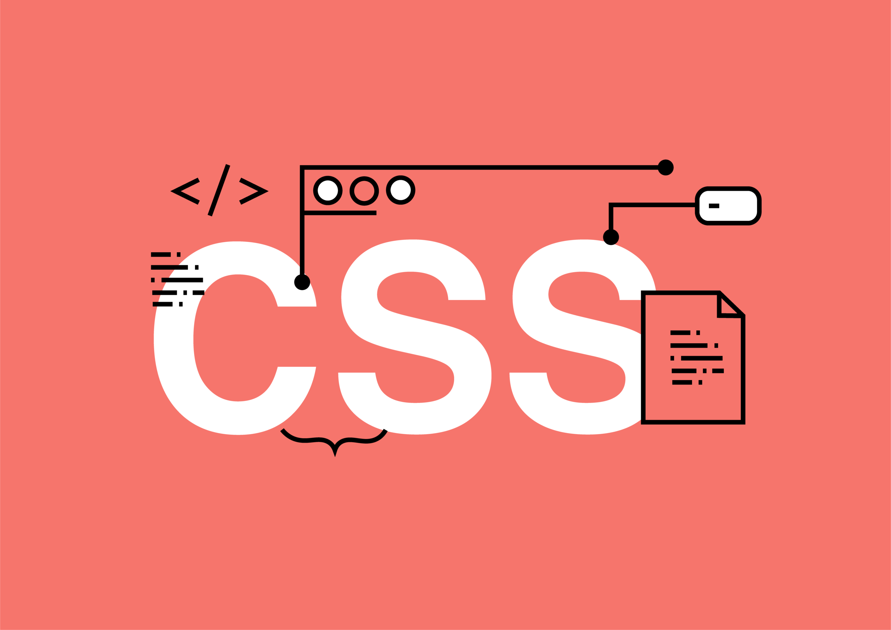
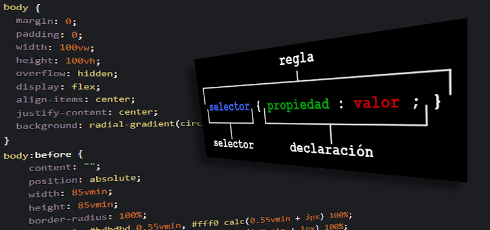

¿Qué es CSS?
CSS (Cascading Style Sheets) es el lenguaje utilizado para describir el estilo de un documento HTML. Con CSS, puedes cambiar colores, fuentes, márgenes, y muchos otros aspectos visuales de la página web.

Cómo se aplica el CSS
Existen tres maneras principales de aplicar CSS a un documento HTML:
- CSS en línea: Se aplica directamente en la etiqueta HTML con el atributo
style. - CSS en el <head>: Se coloca en el bloque <style> dentro del documento HTML.
- Archivo CSS externo: Se enlaza con la página mediante la etiqueta
<link>en el <head>.
Propiedades CSS comunes
| Propiedad | Descripción | Ejemplo |
|---|---|---|
color |
Define el color del texto | color: red; |
background-color |
Define el color de fondo | background-color: lightblue; |
font-size |
Tamaño de la fuente | font-size: 16px; |
margin |
Espacio alrededor del elemento | margin: 20px; |
padding |
Espacio dentro del elemento, alrededor del contenido | padding: 10px; |
border |
Define un borde alrededor de un elemento | border: 1px solid black; |
text-align |
Alineación del texto | text-align: center; |
display |
Tipo de visualización del elemento | display: block; |
flex |
Utilizado para crear un diseño flexible con flexbox | display: flex; |
font-weight |
Define el grosor de la fuente | font-weight: bold; |
line-height |
Altura de línea de texto | line-height: 1.5; |
Ejemplo de propiedades CSS
Aquí tienes un ejemplo de cómo aplicar varias propiedades CSS a un párrafo y un título:
<style>
body {
background-color: lightblue;
font-family: Arial, sans-serif;
}
h1 {
color: darkblue;
text-align: center;
border-bottom: 2px solid darkblue;
}
p {
color: darkgray;
font-size: 18px;
margin: 20px;
padding: 10px;
border: 1px solid gray;
}
</style>

Selectores CSS
Los selectores se utilizan para seleccionar los elementos a los que se aplicarán las reglas de estilo. Algunos selectores comunes son:
| Selector | Descripción | Ejemplo |
|---|---|---|
.mi-clase |
Selector de clase | .mi-clase { color: red; } |
#mi-id |
Selector de ID | #mi-id { font-weight: bold; } |
div p |
Selector de descendientes | div p { color: green; } |
[type="text"] |
Selector de atributos | input[type="text"] { border: 1px solid #ccc; } |
Pseudoelementos CSS
Los pseudoelementos se utilizan para aplicar estilos a una parte de un elemento. Aquí hay algunos ejemplos:
| Pseudoelemento | Descripción | Ejemplo |
|---|---|---|
::before |
Inserta contenido antes del contenido del elemento | p::before { content: "Nota: "; } |
::after |
Inserta contenido después del contenido del elemento | p::after { content: " Fin."; } |
::first-letter |
Aplica estilos al primer carácter de un elemento | p::first-letter { font-size: 2em; } |
::first-line |
Aplica estilos a la primera línea de un elemento | p::first-line { font-weight: bold; } |
Pseudoclases CSS
Las pseudoclases se utilizan para aplicar estilos a un elemento en un estado específico. Aquí hay algunos ejemplos:
| Pseudoclase | Descripción | Ejemplo |
|---|---|---|
:hover |
Aplica estilos cuando el cursor está sobre el elemento | a:hover { color: orange; } |
:focus |
Aplica estilos cuando el elemento tiene el foco | input:focus { border-color: blue; } |
:nth-child(n) |
Selecciona el enésimo hijo de un elemento | li:nth-child(2) { color: red; } |
:first-child |
Selecciona el primer hijo de un elemento | p:first-child { font-weight: bold; } |